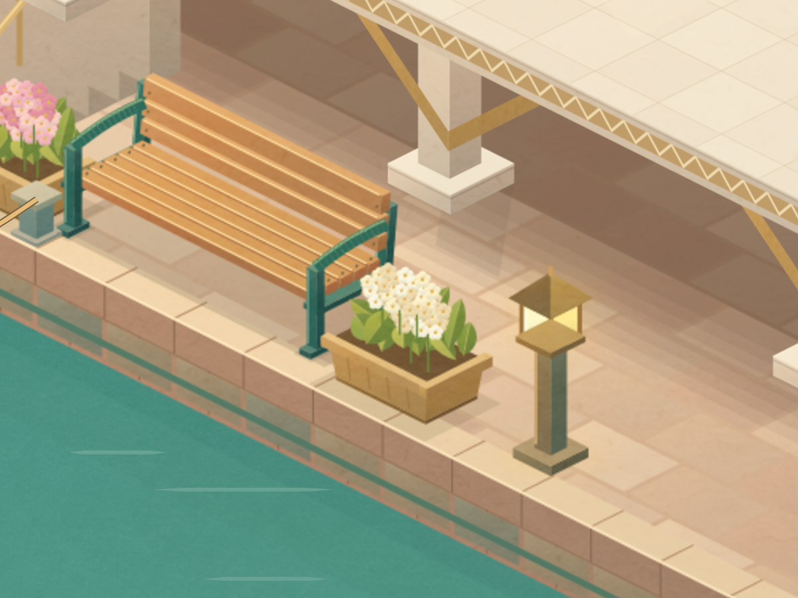
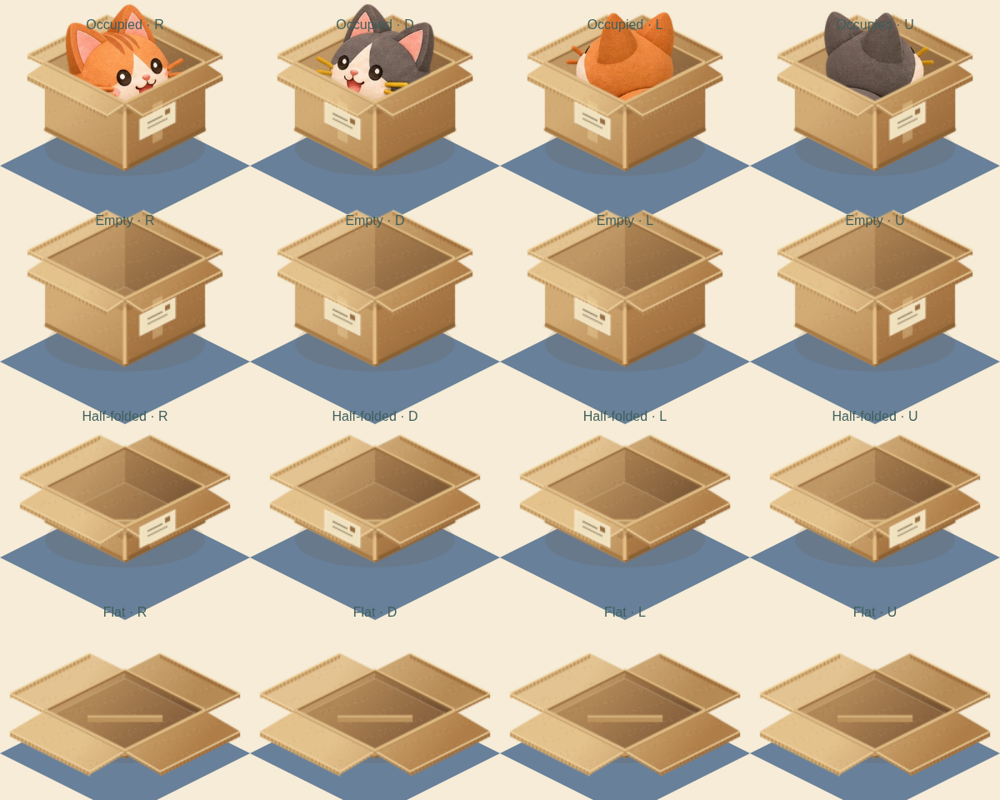
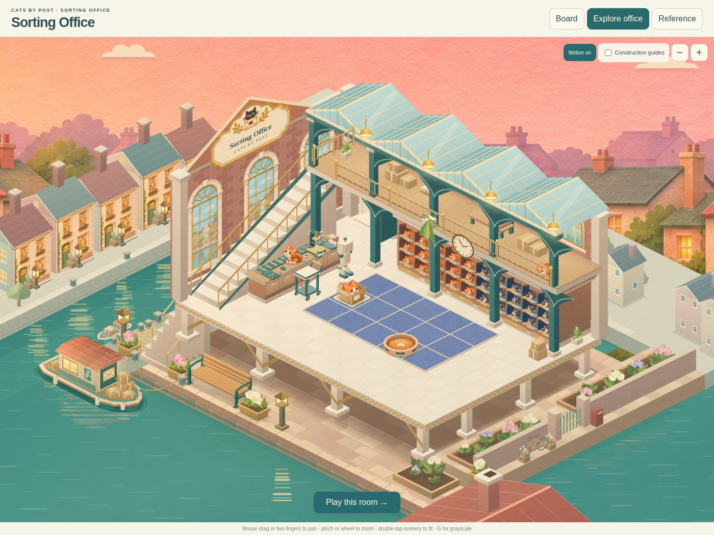

CATS BY POST · SORTING OFFICESmoother deliveries, sturdier details
Continuous cat movement through straight tiles, a thicker kraft box, connected bench supports and a clear gap between the planter and lamp.

Connected supports and clear spacing
The bench faces the canal. Visible front posts support the arms, which join the rear uprights below the top back rail.
A box made from substantial cardboard
Corrugated edges, warm face shading, deeper folds and layered labels carry through the same occupied and empty box.Watch a delivery
A real-time browser recording from the separate game review. Straight movement uses continuous positions over the existing 300ms beat; turns and basket actions retain their original timing. This is a Linux Chromium capture, not an iPhone performance test.
The updated room. All fifteen original Office levels remain playable; main-game integration is still separate and unmerged.The same browser profile measured typical draw time at 7ms after the change versus 83ms before. High-quality scenery pixels are reused between camera changes; water and characters remain live. Physical Safari performance still needs your review.